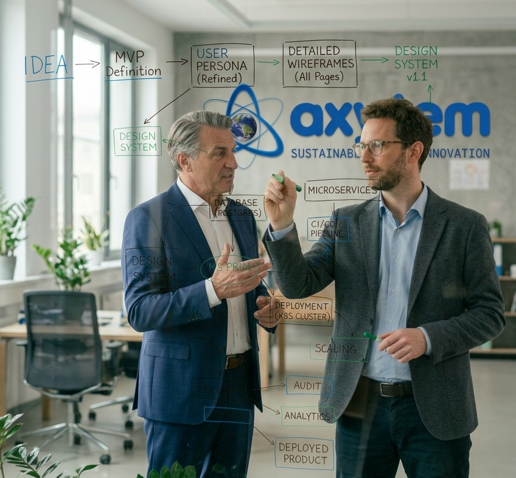

Axyztem builds reliable and functional SaaS platforms that modernize traditional business operations. We focus on creating software that is practical, scalable, and sustainable.

To empower businesses with resilient, efficient, and future‑ready software solutions.
To become a global leader in SaaS innovation by delivering software that blends efficiency, reliability, and long‑term scalability.